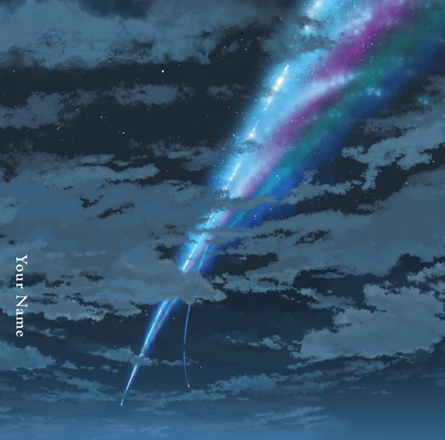
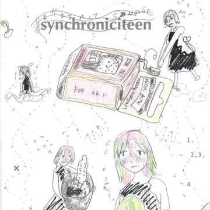
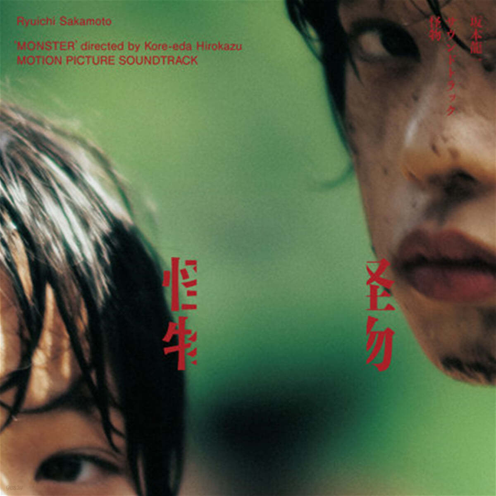

|  |  |  |
|
Radwimps - 蜜葉のテーマ 다이어리를 쓸 때 가장 자주 듣는 노래입니다. 보통 생각을 정리하고 일상을 기록하기 때문에 가사가 있는 곡을 즐겨듣는 편은 아닙니다.
애니 ‘너의 이름은’은 정말 좋아하는 작품인데, 이 노래를 들으면 그 애니메이션을 처음 봤을 때의 감정이 느껴져서 참 좋아하는 곡입니다. |
相対性理論 - 人工衛星 평소 락 음악을 좋아하는 편입니다. 하지만 락 음악 중에서도 메탈 장르의 강한 음악들을 즐겨 듣다보니, 이 곡이 조용하고 잔잔하게 느껴져서 즐겨 듣는 편입니다. 한글로 제목을 번역하면 ‘인공위성’ 입니다.
가사에 우주와 관련된 내용이 많아, 이 노래를 들으면서 다이어리를 쓰면 우주에서 쓰고 있는 듯한 느낌을 받곤 합니다. |
坂本龍一 - Aqua 누구나 우울감에 빠지는 날이 있습니다. 저는 그런 날에는 무조건 다이어리를 씁니다. 잔잔한 멜로디의 노래를 틀어놓고 느끼는 감정들을 다 써보고 한바탕 우는 게 제가 우울감을 이겨내는 방법이 되었습니다.
이 곡은 ‘괴물’이라고 하는 영화의 OST인데, 곡도 정말 좋지만, 이 곡이 나온 장면을 참 좋아해서 자주 듣습니다. |